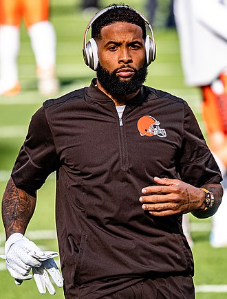

Odell Cornelious Beckham Jr. (born November 5, 1992), commonly known as OBJ,[1] is an American football wide receiver for the Cleveland Browns of the National Football League (NFL). Born in Baton Rouge, Louisiana, Beckham played college football at nearby Louisiana State University (LSU) and was drafted by the New York Giants in the first round of the 2014 NFL Draft. Since entering the NFL, Beckham has been one of the most productive and popular players but has drawn media scrutiny for his personal conduct. Beckham started the 2012 BCS National Championship Game in his first year playing for the LSU Tigers, and won the Paul Hornung Award following his junior season in 2013. In his first season with the New York Giants, Beckham broke numerous NFL rookie receiving records, despite missing the first four games of the season due to injury. Beckham became the first player to record more than 75 receptions, 1,100 yards, and ten touchdowns in a rookie season, and broke the rookie record for the most average receiving yards per game.[2] During Week 12 of his first season, Beckham came to national attention when he made a one-handed touchdown catch whilst falling backwards in a Sunday Night Football game against the Dallas Cowboys,[3] which numerous pundits and athletes called the greatest catch ever made.[4] Beckham went on to win the 2014 Offensive Rookie of the Year award.
‘the most influential NFL layer in the world.
